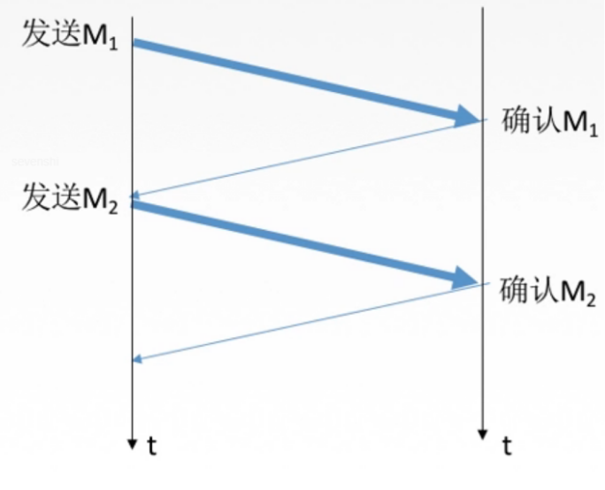

Redis管道
文章目录
管道就是流水线技术，可类比计算机网络数据链路层的流量控制方法中的停止等待协议和GBN协议
管道
单个命令响应类似下图：

连续执行多条指令，那就会花费多个网络数据包来回的时间
但是如果我们改成连续的发起请求，不用等待ack确认后才发送连续多个写的操作和连续的读操作的可以大幅节省IO时间，管道中指令越多，效果越好
就像这样子：
深入理解管道本质
完整的客户端到服务端的指令请求交互流程如下所示：
- 客户端进程调用write将消息写到操作系统内核为套接字分配的发送缓冲send buffer。
- 客户端操作系统内核将发送缓冲的内容发送到网卡，网卡硬件将数据通过「网际路由」送到服务器的网卡。
- 服务器操作系统内核将网卡的数据放到内核为套接字分配的接收缓冲recv buffer。
- 服务器进程调用read从接收缓冲中取出消息进行处理。
- 服务器进程调用write将响应消息写到内核为套接字分配的发送缓冲send buffer。
- 服务器操作系统内核将发送缓冲的内容发送到网卡，网卡硬件将数据通过「网际路由」送到客户端的网卡。
- 客户端操作系统内核将网卡的数据放到内核为套接字分配的接收缓冲recv buffer。
- 客户端进程调用read从接收缓冲中取出消息返回给上层业务逻辑进行处理。
write 操作只负责将数据写到本地操作系统内核的发送缓冲然后就返回了。剩下的事交给操作系统内核异步将数据送到目标机器。但是如果发送缓冲满了，那么就需要等待缓冲空出空闲空间来，这个就是写操作 IO 操作的真正耗时。
read 操作只负责将数据从本地操作系统内核的接收缓冲中取出来就了事了。但是如果缓冲是空的，那么就需要等待数据到来，这个就是读操作 IO 操作的真正耗时。
对于value = redis.get(key)这样一个简单的请求来说，write操作几乎没有耗时，直接写到发送缓冲就返回，而read就会比较耗时了，因为它要等待消息经过网络路由到目标机器处理后的响应消息,再回送到当前的内核读缓冲才可以返回。这才是一个网络来回的真正开销。
而对于管道来说，连续的write操作根本就没有耗时，之后第一个read操作会等待一个网络的来回开销，然后所有的响应消息就都已经回送到内核的读缓冲了，后续的 read 操作直接就可以从缓冲拿到结果，瞬间就返回了。…